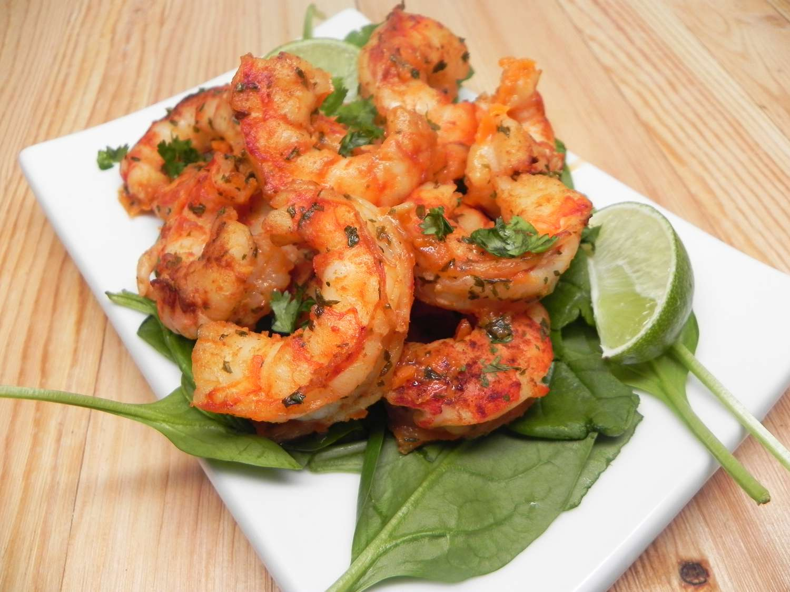

Pan-Fried Shrimp

Description
Prepare tasty shrimp on the stovetop to serve as a quick, protein-packed meal for your kids
Directions
- 8 tbsp butter
- 1 pound peeled shrimp
- 1 tbsp lemon
- 1 pinch garlic salt
- Salt and pepper for seasoning
Steps
- Melt 6 tbsp butter in large skillet
- Add shrimp and cook for 2 minutes
- Reduce heat to medium-low
- Stir 1.5 tsps lemon juice, garlic salt, salt and pepper
- Cook until heated through, approx 1 minute
- Remove from heat and stir in reamining 2 tbsps butter and 1.5 tsps lemon juice
- Serve